DataPrep & Exploratory Data Analysis
Overview
The goal of this project is to explore patterns and predictors across three major chronic diseases: diabetes, cardiovascular disease, and chronic kidney disease (CKD). The preliminary goal of data collection was to find prevalent biomarker datasets for those three conditions, in hopes of finding patterns later on.
Data was pulled from a mix of places: public datasets from Kaggle and the UCI Machine Learning Repository, large-scale national health survey data from NHANES (the CDC's ongoing health and nutrition study), and biomarker reference data pulled from the MarkerDB API. Each source provided unique information including; clinical records, self-reported survey answers, lab results, and structured biomarker information.
Data Sources
Diabetes
CSVXPT (NHANES)| Dataset | Source | Raw Size | Link |
|---|---|---|---|
| Pima Indians Diabetes | Kaggle / UCI | 768 rows × 9 cols | Kaggle |
| UCI Diabetes (Type 2) | UCI ML Repository | 101,766 rows × 50 cols | UCI |
| NHANES Glycohemoglobin (P_GHB) | CDC NHANES | ~15,000 rows | CDC |
Raw data files: diabetes.csv | diabetesUCI.csv | P_GHB.xpt
Cleaned data: diabetes_cleaned.csv | nhanes_diabetes_cleaned.csv
Cardiovascular Disease
CSVDATA| Dataset | Source | Raw Size | Link |
|---|---|---|---|
| Cardiovascular Disease Dataset | Kaggle | 70,000 rows × 13 cols | Kaggle |
| Framingham Heart Study | Kaggle | 4,240 rows × 16 cols | Kaggle |
| Cleveland Heart Disease | UCI ML Repository | 303 rows × 14 cols | UCI |
Raw data files: cardio_train.csv | framingham.csv | processed.cleveland.data
Cleaned data: cardio_train_cleaned.csv | framingham_cleaned.csv | cleveland_cleaned.csv
Chronic Kidney Disease
CSVXPT (NHANES)| Dataset | Source | Raw Size | Link |
|---|---|---|---|
| Chronic Kidney Disease Dataset | UCI ML Repository | 400 rows × 25 cols | UCI |
| NHANES Standard Biochemistry (P_BIOPRO) | CDC NHANES | 10,409 rows × 41 cols | CDC |
| NHANES Albumin/Creatinine (P_ALB_CR) | CDC NHANES | 13,027 rows × 8 cols | CDC |
Raw data files: kidney_disease.csv | P_BIOPRO.xpt | P_ALB_CR.xpt
Cleaned data: kidney_cleaned.csv | nhanes_kidney_cleaned.csv
MarkerDB API
REST APIJSONMarkerDB is a database of known human biomarkers. The REST API was used to pull chemical biomarkers for diabetes, kidney disease, and cardiovascular disease.
Base Endpoint:
GET Request Example:
Response Format: JSON — returns biomarker names, IDs, and associated conditions.
Cleaned output: cleaned_markerdb_api.csv
Code
All cleaning and exploration was done in Jupyter notebooks. Links to each notebook below:
| Notebook | Description |
|---|---|
| diabetes_cleaned.ipynb | Loads and cleans Pima, UCI, and NHANES diabetes data. Handles missing values, creates binary diabetes label. |
| cardiovascular_cleaned.ipynb | Loads Cardio, Framingham, and Cleveland datasets. Converts age from days to years, removes physiologically impossible outliers. |
| kidney_cleaned.ipynb | Loads UCI kidney and NHANES renal data. Applies 70% completeness threshold, imputes with median/mode. |
| cdc_api_data_cleaning.ipynb | Makes GET request to MarkerDB API, parses JSON response, filters for 3 target conditions, exports clean CSV. |
| DataPrep_EDA_Visualizations.ipynb | Generates all visualizations comparing raw vs cleaned data across all datasets. |
Data Cleaning Summary
Every dataset came in with its own set of problems, so there wasn't a one-size-fits-all fix — each one needed its own approach. Here's a plain-English walkthrough of what I found and what I did about it.
Diabetes
The Pima dataset looked clean at first, no missing values flagged, but some columns like Glucose, BloodPressure, and BMI had biologically impossible values (zero). A blood pressure of zero means a missing value was encoded as 0, not that the patient was dead. Zeros were replaced with the column median so the distributions stayed realistic. The NHANES lab data came in as separate XPT (SAS) files that was merged together on a shared patient ID.
| Step | What I did |
|---|---|
| Zero replacement | Replaced 0s in Glucose, BP, BMI, SkinThickness, Insulin with column median |
| NHANES merge | Joined P_GHB, P_GLU, P_HDL, P_TRIGLY on SEQN (patient ID) |
| Label creation | Used HbA1c ≥ 6.5 as diabetes threshold for NHANES label |
| Duplicates | Removed duplicate rows after merge |
Cardiovascular Disease
The big cardiovascular dataset (70,000 patients) had age stored in days instead of years, which meant everyone appeared to be between 10,000 and 25,000 years old until converted. It also had blood pressure readings that were clearly entered wrong (negative values, systolic below diastolic, readings over 400 mmHg). Physiological cutoffs were applied to remove those rows rather than impute them, since bad BP values can not really be estimated reliably. After that, about 1,300 rows were dropped, which is about 2% of the dataset, so no real information was lost. The Framingham and Cleveland datasets were much smaller and cleaner, mainly needing median imputation for scattered missing values.
| Step | What I did |
|---|---|
| Age conversion | Converted age from days → years (÷ 365.25) |
| BP outlier removal | Kept systolic 80–250 mmHg, diastolic 40–150 mmHg |
| Height/weight | Removed implausible values (height <100cm or >220cm, weight <30kg or >200kg) |
| Framingham imputation | Filled missing numeric values with column median |
| Cleveland formatting | Added column headers (raw file had no header row) |
Chronic Kidney Disease
The UCI kidney dataset was initially the messiest dataset. Out of 25 features, several had over 100 missing values in a 400-row dataset. Any row that was missing more than 30% of its values was dropped, then median imputation was used for remaining numeric gaps and mode imputation for categorical ones. Some columns like red blood cells and white cell count were stored as text ("normal" / "abnormal") and stayed that way since they're categorical. The NHANES kidney files were merged from three separate sources (serum chemistry, urine albumin, and kidney questionnaire) and a CKD label was derived from a standard albumin-to-creatinine ratio.
| Step | What I did |
|---|---|
| Row filtering | Dropped rows with <70% complete data |
| Numeric imputation | Median fill for: age, BP, glucose, BUN, creatinine, hemoglobin |
| Categorical imputation | Mode fill for: RBC, pus cells, hypertension, diabetes history |
| Label creation | Mapped "ckd" → 1, "notckd" → 0 for target variable |
| NHANES label | Albumin/creatinine ratio ≥ 30 → CKD positive |
MarkerDB API
The API data cleaning was mainly focused on filtering down to the relevant conditions. The API returns biomarkers across many disease categories, so the full list was pulled and then conditions were filtered to keep only the three categories of conditions: Diabetes, Cardiovascular, and Kidney. Duplicates were dropped along with entries with a missing biomarker name.
| Step | What I did |
|---|---|
| HTTP GET request | Fetched Diagnostic / Chemical biomarkers via REST API |
| Condition filter | Kept only rows for the 3 target disease conditions |
| Deduplication | Removed duplicate (biomarker_name, condition) pairs |
| Null removal | Dropped rows with missing biomarker names |
Raw vs Cleaned Data Samples
Kidney data
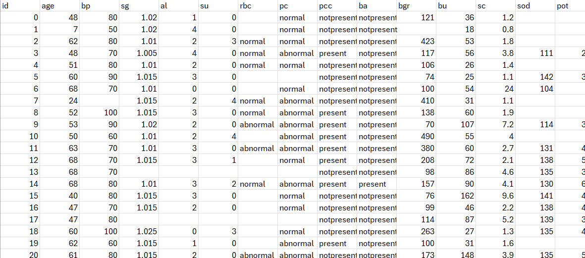
Raw Kidney Data
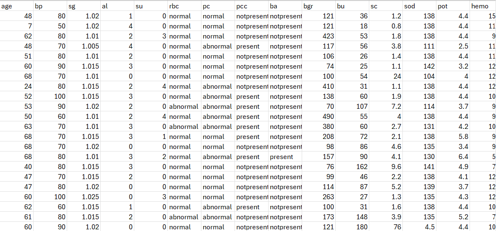
Cleaned Kidney Data
MarkerDB API
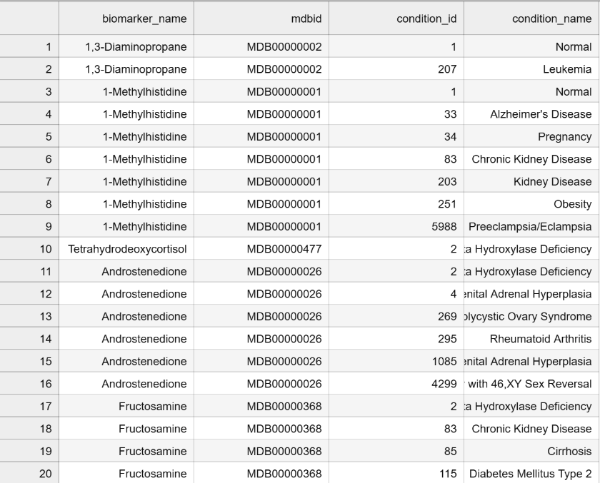
Raw API Data
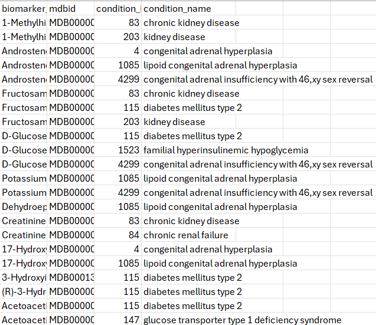
Cleaned API Data
Heart & Diabetes
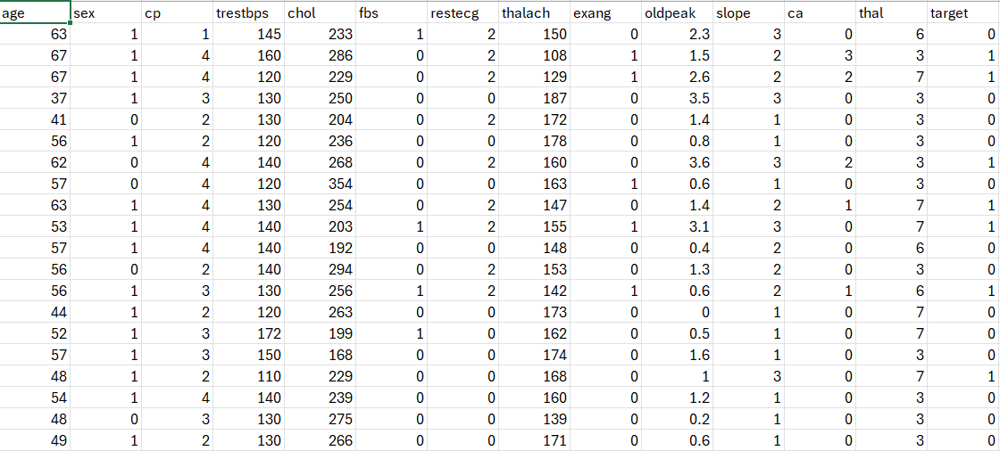
Cleaned Cleveland Cardiovascular Data
*While sex is not always an important disease indicator, it does affect how the condition develops, which is why it was kept.
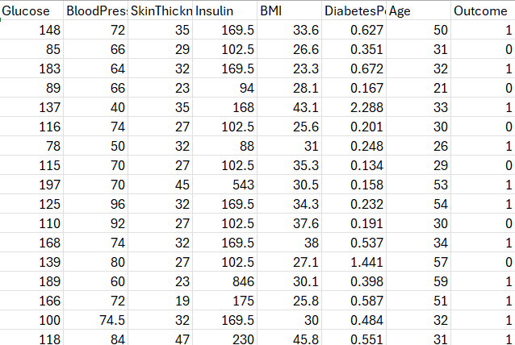
Cleaned Diabetes Data
Visualizations
Biomarker distributions
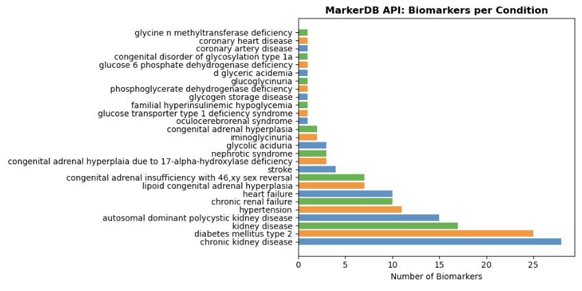
Fig 1. From API data, the number of biomarkers in relation to (heart, kidney, diabetic) conditions
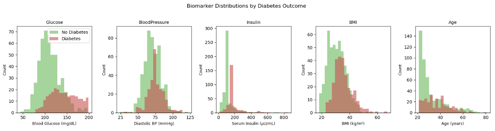
Fig 2.The distribution of major biomarkers associated with diabetes
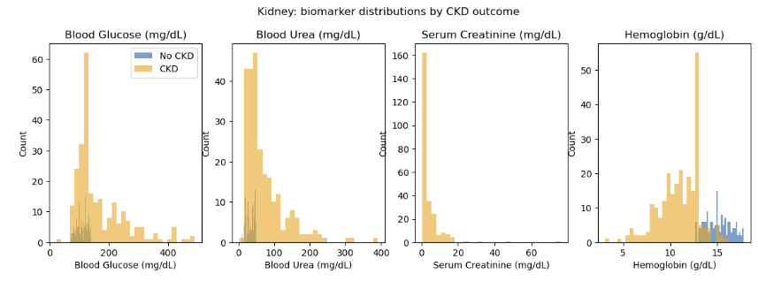
Fig 3. Major biomarkers distribution associated with CKD
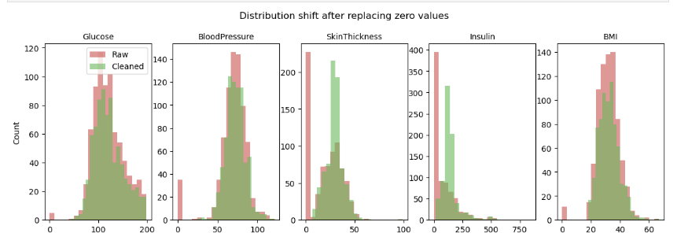
Fig 4. After removing null rows, the distribution of biomarkers is compared to with/without imputing the median.
Cardiovascular Disease Visualizations
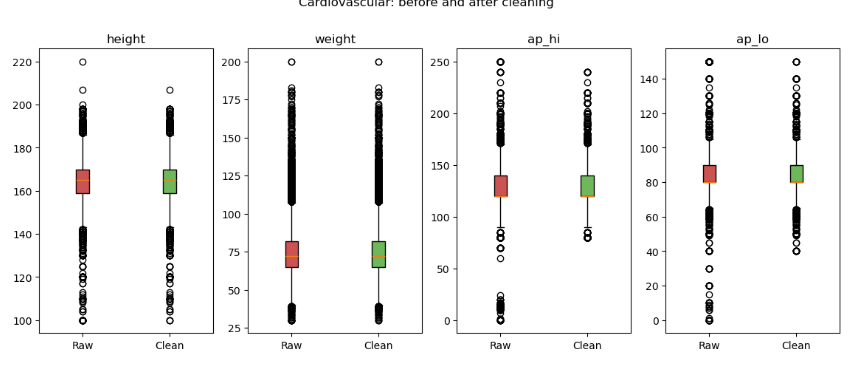
Fig 5.A boxplot comparing outliers from the general Cardiovcular Disease dataset, before and after cleaning.
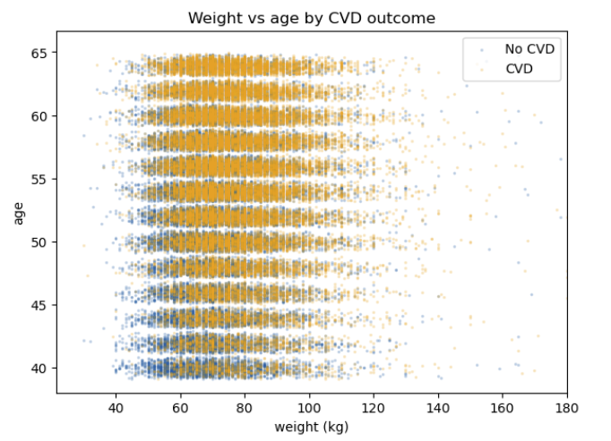
Fig 6.Plot showing relationship between age and weight and examining these with and without CVD. The values seen are generally expected, as increase in age and/or weight increases likelihood of CVD.